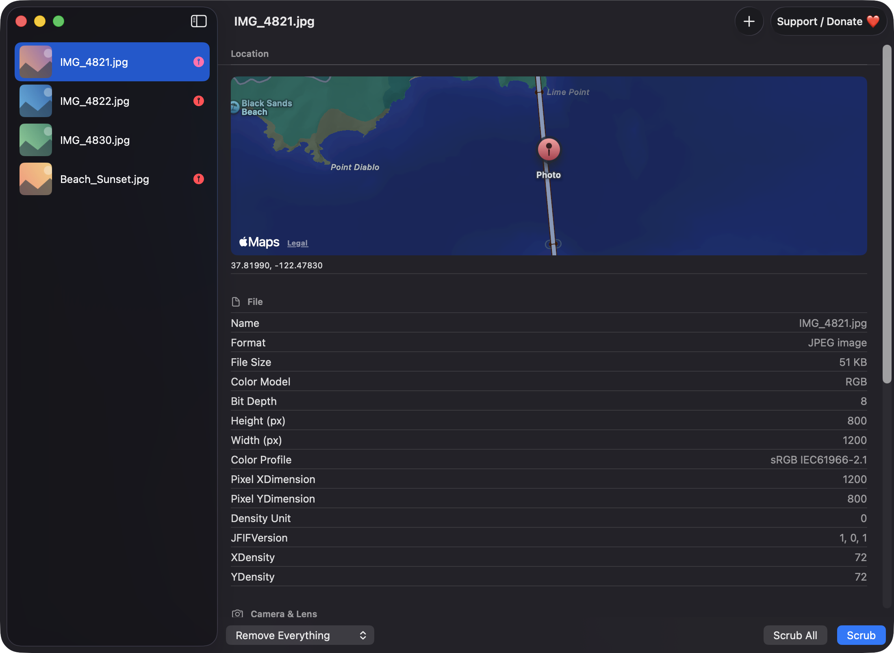
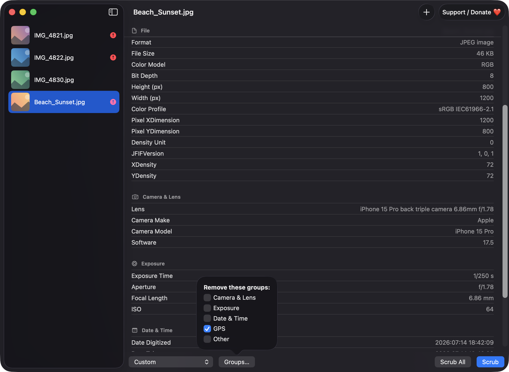
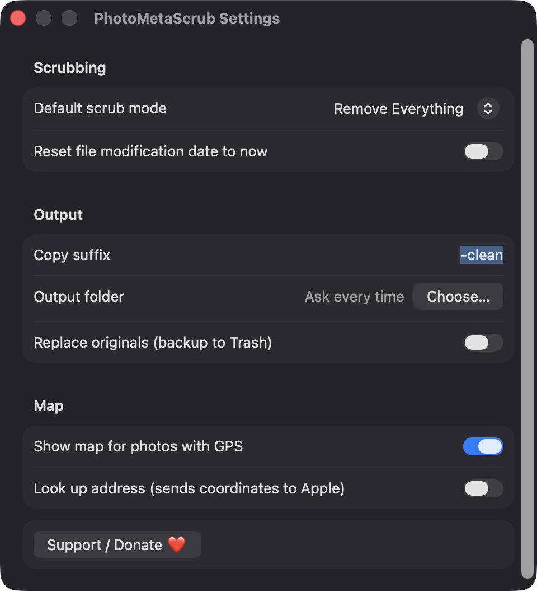

Grouped metadata viewer
See File, Camera Lens, Exposure, Date Time, GPS and Other details for every photo, with friendly names. Copy it all as text with Shift-Command-C.
Open source · macOS 14+ · Universal binary · Files & Conversion
Drop JPEG, HEIC, PNG or TIFF photos onto the window or Dock icon to inspect their hidden metadata, then remove everything or just the location. Scrub All is Shift-Command-S.
Free & MIT licensed · Apple Silicon & Intel · Latest release

Features
Everything runs locally on your Mac with Apple frameworks only, from reading metadata to writing clean copies.
See File, Camera Lens, Exposure, Date Time, GPS and Other details for every photo, with friendly names. Copy it all as text with Shift-Command-C.
Remove Everything, Remove Location Only, or Custom to pick which groups go. Orientation is always kept so photos still display the right way up.
Drop several images or whole folders at once. A sidebar shows thumbnails with a red pin on photos that contain GPS data.
Photos with coordinates show a MapKit pin. Address lookup is off by default because it sends coordinates to Apple.
Write copies with a suffix such as -clean to a folder you choose, or replace originals after a confirmation with the old files moved to the Trash.
The compressed image data is copied and the metadata replaced, then re-read to verify it is clean. If that fails, it re-encodes at maximum quality and tells you which files.
Screenshots


Install
PhotoMetaScrub is open source and not notarized with a paid Apple Developer ID, so macOS needs one extra step the first time.
xattr -cr /Applications/PhotoMetaScrub.app
Download
Free, forever. Built for macOS 14 Sonoma or newer, Apple Silicon and Intel.
Not notarized: on first launch right-click PhotoMetaScrub.app → Open.
FAQ
Yes. It is released under the MIT license, the full source is on GitHub, and there are no ads, accounts or subscriptions. If it is useful to you, there is an optional Support button that opens the author's Ko-fi page.
None beyond the files and folders you choose. It does not request Accessibility, Screen Recording, Camera, Microphone or Photos-library access. The only network use is MapKit map tiles and the optional address lookup, and you can turn off both in Settings.
Nothing is uploaded or collected, and there is no analytics or backend. Cleaned copies go to the output folder you choose, or replace the originals beside them if you enable that, and the app keeps only your preferences in Settings.
Notarization requires a paid Apple Developer account, and this is a free open-source project. Right-click the app and choose Open once to get past Gatekeeper, or build it yourself from source with Xcode.
Yes. PhotoMetaScrub was generated by Claude Code from a written spec as a clean-room reimplementation, with no code or assets from any commercial app. The full source is on GitHub under MIT, so you can read every line before you run it. It has had less human review than a hand-written app, so bug reports are welcome.
Support ❤️
PhotoMetaScrub is a free, open-source alternative to paid utilities. If it earns a spot on your Mac, a coffee keeps the updates coming.
☕ Support Or on Ko-fi